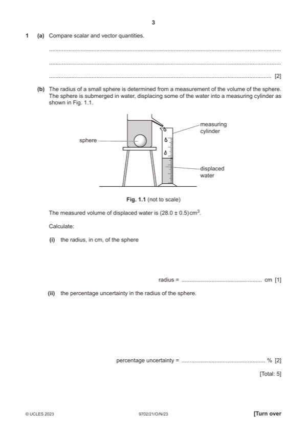
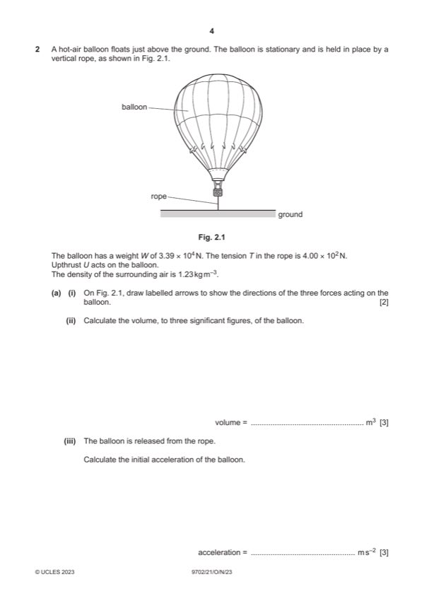
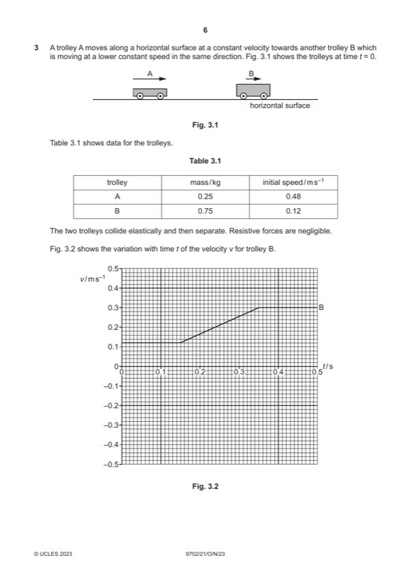
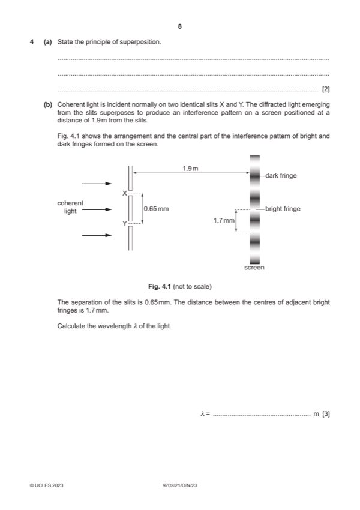
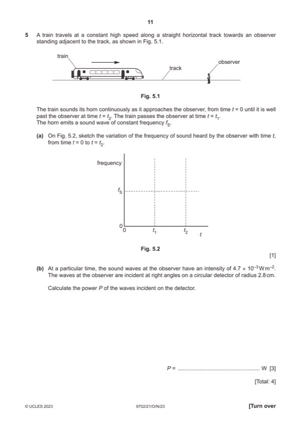
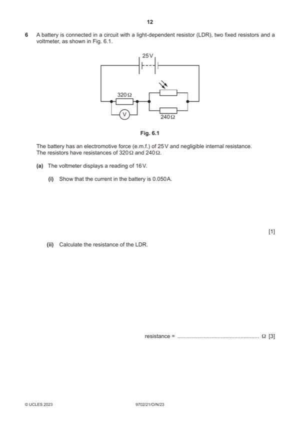
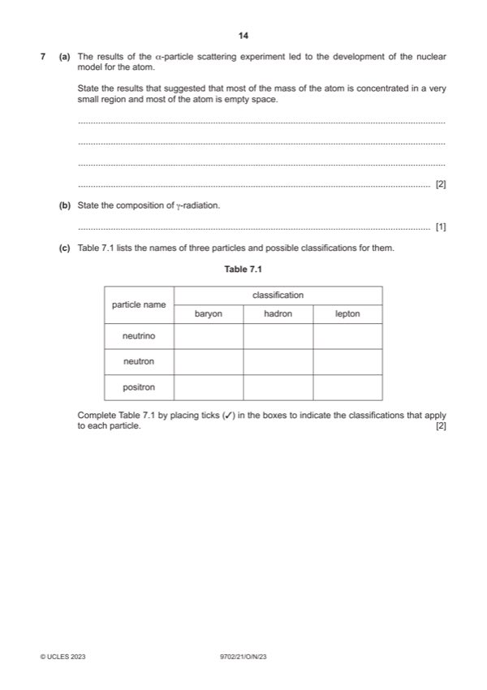

Question 1

Original paper page 3
Part 1 — solution
mark: One or two correctly labelled arrows
Mark points
- Include the ideas shown in the solution above.
Step-by-step solutions based on the mark scheme (not a mark-scheme dump).

Part 1 — solution

Part 2(a)(i) — solution
Part 2(a)(ii) — solution
Part 2(a)(iii) — solution
Part 2(b) — solution
Part 2(c)(i) — solution
Part 2(c)(ii) — solution
Part 2(c)(iii) — solution

Part 3(a) — solution
Part 3(b)(i) — solution
Part 3(b)(ii) — solution
Part 3(c) — solution

Part 4(a) — solution
Part 4(b) — solution
Part 4(c)(i) — solution
Part 4(c)(ii) — solution
Part 4(d) — solution

Part 5(a) — solution
Part 5(b) — solution

Part 6(a)(i) — solution
Part 6(a)(ii) — solution
Part 6(a)(iii) — solution
Part 6(b) — solution

Part 7(a) — solution
Part 7(b) — solution
Part 7(c) — solution
Part 7(d)(i) — solution
Part 7(d)(ii) — solution